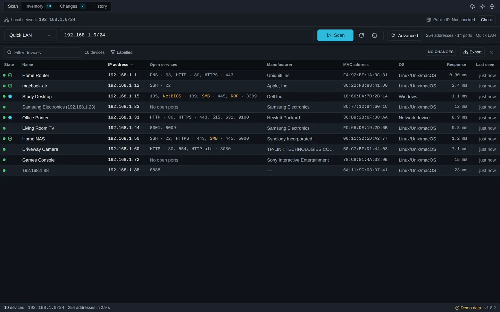

Know what is connected
Every device that answers, with its IP address, MAC address, manufacturer, hostname, open services, operating system estimate, TTL and both ICMP and TCP response times.
ArcScan for Windows and macOS
ArcScan gives you a fast, private inventory of connected devices, open services, manufacturers and hostnames, and tells you exactly what changed since the last scan. No account, no cloud dashboard, no subscription.
v1.7.1

Everything runs locally in an interface designed for reading a network: dense rows, real keyboard navigation, and equal attention to the light and dark themes.

ArcScan answers the questions that come up when something on a network is wrong, or when you have just taken over a network you did not build.
Every device that answers, with its IP address, MAC address, manufacturer, hostname, open services, operating system estimate, TTL and both ICMP and TCP response times.
New devices, devices that have gone missing, IP address changes, hostname and manufacturer changes, and ports that opened or closed since the previous scan.
Open a device's web interface, its SMB shares, an SSH session or a Remote Desktop connection straight from the inventory, or send a Wake-on-LAN packet. Only the actions the open services support are enabled.
Scan history, device names, notes and observations live in a SQLite file on your own computer. Nothing is uploaded, and there is no account to create.
ARP-assisted discovery finds printers, phones, access points, cameras and firewalled hosts that ignore ICMP entirely, and a second confirmation pass keeps results consistent from one scan to the next.
Five profiles, from a quick sweep to a full port range, plus your own ports, timeout and all three concurrency limits. ArcScan shows the workload before it starts and stops the moment you ask, keeping what it found.
Change detection
ArcScan compares each scan with the most recent earlier scan of the same target and profile. Devices are matched by MAC address first, then by hostname and manufacturer, so a new DHCP lease shows up as a device that changed address rather than as one device vanishing and another appearing.
Field-level differences are shown for each change, so you can see that a printer started serving HTTPS rather than only that something about it is different.
3 changes since the previous scan
Conference Room Display New device
192.168.10.84 · Amazon Technologies Open services: 8008, 8009
Front Office Printer Changed
IP address 192.168.10.42→192.168.10.57 + HTTPS · 443 Hostname printer-old→front-office-printer
Warehouse Tablet Missing
192.168.10.140 · last seen 2 days ago
Three steps, with nothing hidden in between.
It detects the subnet this computer is on and fills it in for you. You can also enter any single IPv4 address, a dashed range such as 10.0.0.1-50, or a CIDR block such as 192.168.1.0/24.
An ICMP echo request and TCP connection attempts on the profile's ports, then a read of your computer's own ARP table to catch devices that answer neither. Nothing else is sent.
Devices are folded into a local inventory keyed by MAC address and scoped to the network they were seen on, and the scan is compared with the most recent earlier completed scan that covered the same target with the same ports.
No password is ever attempted. No exploit is ever sent. No scan result, device name or note leaves your computer. There is no stealth or evasion behaviour, because ArcScan is a network administration tool and nothing else.
Only scan networks you own or have been authorised to inspect. Scanning someone else's network without permission may be unlawful where you are.
It is built for the everyday work of knowing a network, not for formal assessment or round-the-clock monitoring.
A plain capability comparison against the two kinds of tool people usually weigh ArcScan against.
| Capability | ArcScan | Traditional IP scanner | Cloud network monitor |
|---|---|---|---|
| One-click local scanning | Yes | Usually | Sometimes |
| Persistent device history | Yes | Limited | Yes |
| Change detection between scans | Yes | Limited | Yes |
| Account required | No | No | Usually |
| Cloud dependency | No | No | Yes |
| Subscription | No | No | Usually |
| Direct device actions | Yes | Often | Varies |
| Data stored locally | Yes | Yes | Usually not |
| Runs on Windows and macOS | Yes | Varies | Browser based |
| Continuous monitoring and alerting | No | No | Yes |
The last row is where a cloud monitor genuinely wins. ArcScan runs a scan when you ask it to and compares it with the last one; it does not watch a network around the clock or send alerts. If that is what you need, ArcScan is not a replacement for it.
Installers are published on GitHub Releases and downloaded directly from there, so this site never re-hosts a binary.
Every link above points at the latest release. Exact file sizes are filled in from the GitHub API when it is reachable.
ArcScan is not code-signed with a paid publisher certificate, and the macOS builds are not notarised. Windows SmartScreen will show an unknown-publisher warning: choose More info, then Run anyway. On macOS, right-click the application and choose Open the first time.
Update packages are cryptographically signed with a minisign key, and ArcScan verifies that signature before installing an update. That protects the update path; it is not the same as publisher signing, and this page will say so until it is. SHA-256 checksums are published with every release if you want to verify a download.

Open source
ArcScan is MIT licensed and the whole application is on GitHub, scanner included. If you want to know exactly what it sends and what it stores, you can read it rather than believe this page.
Issues and pull requests are welcome. The desktop application is the product, and downloading it is all most people need to do.
Yes. ArcScan is free and open source under the MIT license. There is no paid tier, no account and no subscription.
No. Scan results, the device inventory, your names and your notes are stored in a SQLite database on your own computer and are never sent anywhere.
ArcScan makes two optional outbound requests, both described on the privacy page: an update check against GitHub, which sends only the version being checked and can be switched off, and a public IP lookup that is off by default and only runs when you press the button.
No. Scanning uses ordinary operating system networking rather than raw sockets, so no elevation is needed to scan. The installer itself may ask for elevation to install for all users, like any application.
Windows 10 and Windows 11 on x64 and ARM64, and macOS 11 or later as a single universal build for both Apple Silicon and Intel.
Yes, with the Remote subnet profile, which uses ICMP and TCP discovery and makes no local ARP assumptions.
Discovery is less complete on a routed network. MAC addresses and manufacturers are only visible on your own segment, and a device that drops every probe cannot be found from the other side of a router.
Some devices ignore ICMP and have no open ports at all. Sleeping Wi-Fi devices answer slowly. Access points with client isolation stop one device reaching another.
Try the Reliable LAN profile, which waits longer, probes a wider port set, and re-triggers ARP resolution for addresses that did not answer the first time. That pass is what makes results consistent between scans.
Quick LAN sweeps your subnet with a short timeout and the common service ports, which is enough for a routine look at what is connected.
Reliable LAN uses longer timeouts, a gentler sweep and a wider port set covering printing, casting, streaming and management services. It finds phones, printers and IoT equipment that miss the first pass, and takes longer in exchange.
Yes. It attempts a TCP connection to the ports the selected profile covers and reports which ones accepted. You can set your own list and ranges, up to 2,048 ports per scan, and ArcScan shows the total number of connection attempts before it starts.
No. ArcScan performs read-only discovery. It never attempts a password, never sends an exploit, and makes no assessment of whether a service is vulnerable. It tells you what is reachable, which is a different and more basic question.
Yes. Every scan is compared with the most recent earlier scan of the same target and profile, and ArcScan reports new devices, missing devices, IP address changes, hostname and manufacturer changes, and ports that opened or closed.
Devices are matched by MAC address first, so a DHCP lease change is reported as a device that moved rather than as a new device plus a missing one.
Not yet. The installers are not signed with a paid publisher certificate and the macOS builds are not notarised, so Windows SmartScreen and macOS Gatekeeper will warn on first launch.
Update packages are cryptographically signed with a minisign key that the application verifies before installing. That protects the update path but is not the same as publisher signing. SHA-256 checksums are published with every release.
Yes. The MIT license permits commercial use and there is no per-seat or per-device charge. Only scan networks you own or are authorised to inspect.
No. ArcScan discovers IPv4 hosts only. Targets are single IPv4 addresses, dashed IPv4 ranges or IPv4 CIDR blocks. IPv6 discovery is not implemented, and this page will not claim otherwise until it is.
Free and open source, for Windows and macOS. Your scan results never leave your computer.
Download ArcScan